Beispiele für die Berechnung von IR-Strahlungsexposition
Beispiel zur Abschätzung der Gefährdung der Augen und der Haut durch IR-Strahlungsexpositionen beim Transport einer Schmelze
Die Höhe und spektrale Verteilung der Strahldichte eines erhitzten Körpers hängt von seiner Temperatur und seinem Emissionsgrad ab. Mit Hilfe der Planck’schen Strahlungsformel kann man berechnen, in welchem Wellenlängenbereich welche Strahlungsanteile auftreten. Für die Gefährdungsbeurteilung an Arbeitsplätzen ist das eine wichtige Information, da man damit die Art einer möglichen Gefährdung abschätzen kann. Zum Beispiel emittiert eine Schmelze aus normalem Glas bei einer Temperatur von ca. 1300 °C bis 1400 °C Strahlung im sichtbaren und infraroten Wellenlängenbereich.
Berechnungsbeispiel:
(1) Der Fahrer eines Gabelstaplers transportiert mit seinem Fahrzeug einen Kessel mit geschmolzenem Eisen. Der Durchmesser der Kesselöffnung beträgt 85 cm, die Temperatur der Eisenschmelze liegt bei 1480 °C. Der Abstand der Kesselöffnung zum Fahrer beträgt 2,60 m. Zwischen dem Transportgut und dem Fahrer befindet sich am Stapler zum Schutz vor Spritzern aus der Schmelze eine Schutzscheibe aus Polycarbonat von 8 mm Dicke. Der gegenüber dem Kessel erhöht sitzende Fahrer blickt in einem Winkel von ca. 45 °C auf die Schmelze.
(2) Nimmt man eine Aufenthaltsdauer des Fahrers von 1 min im Bereich der Wärmestrahlung aus der Eisenschmelze an, dann ist das Ergebnis der Berechnung, dass alle EGW der Kennbuchstaben a bis l der Tabelle A2.1 der Anlage 2 dieser TROS IOS eingehalten werden. Es besteht also im Sinne der OStrV keine Gefährdung der Augen und der Haut durch UV-Strahlung und keine Gefährdung der Netzhaut durch Verbrennung und durch Photoretinitis (Blaulichtschädigung).
(3) Die in Absatz (2) genannte Beurteilung basiert auf einer Berechnungsmethode, die nachfolgend beispielhaft für die Kennbuchstaben a und b der Tabelle A2.1 der Anlage 2 dieser TROS IOS näher erläutert wird. Die Berechnung kann für alle weiteren Berechnungen für die Kennbuchstaben c bis o in ähnlicher Weise vorgenommen werden:
Für die Berechnung der theoretisch zu erwartenden Bestrahlungsstärken Eeff und EUVA sowie der Bestrahlungen Heff und HUVA sind die Formeln zu verwenden, die in Tabelle A2.1 in Anlage 2 dieser TROS IOS unter den Buchstaben a) und b) aufgeführt sind:
| a) | 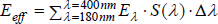 | und | 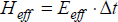 |
| b) | 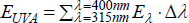 | und | 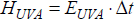 |
Die Berechnung mit dem Planck’schen Strahlungsgesetz führt zunächst nicht direkt zur Bestrahlungsstärke E, sondern zur Strahldichte L und somit zu:
| a) | 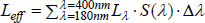 |
| b) | 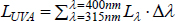 |
Der Zusammenhang zwischen der Bestrahlungsstärke E und der Strahldichte L ergibt sich unter Einbeziehung des Raumwinkels Ω zu:
E = L ⋅ Ω
Der zu verwendende Raumwinkel Ω wird aus der Größe der strahlenden Fläche A, dem Abstand zur Quelle r sowie dem Beobachtungswinkel α berechnet:
| Ω | = | A | ⋅ | cos α |
| r² |
Für eine runde Strahlungsquelle mit dem Durchmesser d folgt somit:
| Ω | = | d² ⋅ π | ⋅ | cos α |
| 4 ⋅ r² |
Damit ergeben sich für die Berechnung der Bestrahlungsstärken folgende Formeln:
| a) | 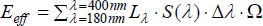 | oder | 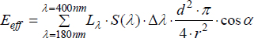 |
| b) | 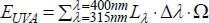 | oder | 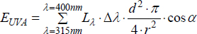 |
Zur Durchführung der Berechnungen wird ein Tabellenkalkulationsprogramm benötigt. Mit diesem Programm wird zunächst unter Anwendung des Planck’schen Strahlungsgesetzes die spektrale Strahldichte mit einer Wellenlängenauflösung von Δλ = 1 nm im Wellenlängenbereich von 180 bis 400 nm berechnet. Die Temperatur der Strahlungsquelle ist dabei in Kelvin einzusetzen, in dem hier vorliegenden Beispiel also 1753 K (entspricht 1480 °C). Man erhält so eine Spalte der Tabellenkalkulation, in der die ungewichteten Strahldichten in 1 nm-Schritten enthalten sind (siehe Spalte 2 in Tabelle A1). In einer weiteren Spalte der Tabellenkalkulation werden anschließend die mit S(λ) gewichteten Strahldichten berechnet (siehe Spalte 3 in Tabelle A1). Für die weitere Berechnung ist der Raumwinkel Ω zu berücksichtigen. Dieser ergibt sich aus dem Durchmesser der strahlenden Fläche (d = 0,85 m), dem Abstand zur Strahlungsquelle (r = 2,6 m) und dem Beobachtungswinkel (α = 45°) zu:
| Ω | = | 0,85² m² ⋅ π | ⋅ | cos 45° | = | 0,0594 sr |
| 4 ⋅ 2,6² m² |
Anschließend werden die berechneten Werte der Spalten 2 und 3 in Tabelle A1 jeweils mit dem Raumwinkel Ω = 0,0594 sr multipliziert (siehe Spalten 4 und 5 in Tabelle A1).
| Tab. A1 | Tabellenkalkulation für die Berechnung von Eeff und EUVA (entsprechend den Formeln a) und b) gemäß Anlage 2 dieser TROS IOS) |
| λ | Lλ · Δλ | Lλ · S(λ) · Δλ | Lλ · Δλ · Ω bzw. Eλ · Δλ | Lλ · S(λ) · Δλ · Ω bzw. Eλ · S(λ) · Δλ |
| in nm | in W/m²sr | in W/m²sr | in W/m² | in W/m² |
| 180 | 9,92E-12 | 1,19E-13 | - | 7,06E-15 |
| 181 | 1,24E-11 | 1,56E-13 | - | 9,26E-15 |
| 182 | 1,55E-11 | 2,05E-13 | - | 1,22E-14 |
| .... | .... | .... | - | .... |
| 315 | 1,86E-04 | 5,57E-07 | 1,10E-05 | 3,31E-08 |
| .... | .... | .... | .... | .... |
| 400 | 1,43E-02 | 4,28E-07 | 8,49E-04 | 2,54E-08 |
| Bestrahlungsstärke E: | 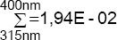 | 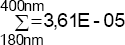 | ||
Aus der Summe der berechneten Werte aus den Spalten 4 und 5 der Tabelle A1 ergeben sich die Bestrahlungsstärken zu:
| a) | 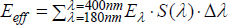 = 0,0361 mW/m² |
| b) | 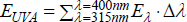 = 19,4 mW/m² |
Daraus folgt für die Bestrahlung des Fahrers bei einer angenommenen Expositionsdauer von 1 min:
| a) | Heff = Eeff · Δt = 0,0361 mW/m² · 60 s = 2,2 mJ/m² |
| b) | HUVA = EUVA · Δt = 19,4 mW/m² · 60 s = 1,16 mJ/m² |
Die in der Tabelle A2.1 unter den Kennbuchstaben a) und b) genannten Expositionsgrenzwerte von Heff (GW) = 30 J/m² und HUVA (GW) = 10000 J/m² werden deutlich unterschritten.
(4) Überschritten werden dagegen der EGW zum Schutz vor einer Verbrennung der Hornhaut (Kennbuchstabe m) um das Achtfache und der EGW zum Schutz vor Verbrennungen der Haut um das Fünffache. Als EGW gegen Hautverbrennungen wurde hierbei der nach Abschnitt 6.3 dieser TROS IOS festgelegte Wert verwendet. Der EGW zum Schutz vor Hautverbrennungen wird bereits nach 2,5 s erreicht. Es liegt also durch die starke Wärmestrahlung aus der Eisenschmelze eine hohe Verbrennungsgefahr für die Augen und die Haut vor.
(5) Daher müssen umgehend Maßnahmen ergriffen werden, die zur Verringerung der Strahlungsexposition des Staplerfahrers führen. Es sind also wirksame Schutzmaßnahmen gegen Wärmestrahlung nötig, um die Einhaltung der EGW zu erreichen. Die vorgeschriebene Rangfolge der Schutzmaßnahmen gemäß § 7 Absatz 1 OStrV ist bei deren Auswahl und Festlegung zu beachten.
(6) Das Beispiel zeigt, dass es Fälle gibt, in denen eine Berechnung der Exposition eine aufwändige Messung ersetzen kann. Eine Gefährdungsbeurteilung nach § 3 OStrV wird dadurch vereinfacht.
Beispiel zur Abschätzung der Gefährdung der Augen und der Haut durch IR-Strahlungsexpositionen an einem in der Gastronomie gebräuchlichen Kontaktgrill
(1) In der Gastronomie werden häufig sogenannte "Kontaktgrills" eingesetzt. Hierbei handelt es sich um Geräte, bei denen eine große, meist rechteckige und beschichtete Metallplatte erhitzt wird. In einigen Restaurants wird an diesen Platten direkt vor dem Tisch der Gäste gekocht, in anderen Fällen werden diese Geräte eingesetzt, um große Mengen Fleisch zu braten. Oftmals sind Beschäftigte in der Gastronomie über mehrere Stunden an diesen Arbeitsplätzen tätig. Dabei werden die Augen, das Gesicht sowie die Hände und Arme der thermischen Strahlung der heißen Platte ausgesetzt.
(2) Die Strahlungsemission von Quellen der beschriebenen Art lässt sich durch das Planck’sche Strahlungsgesetz beschreiben. Kennt man die Temperatur des Körpers und die Größe der strahlenden Fläche, so lässt sich die Strahlungsemission abschätzen. Dadurch können aufwändige Messungen vermieden werden. Abweichungen vom berechneten Wert sind nur "nach unten" möglich, d. h., ein Irrtum würde einzig den Sicherheitsfaktor erhöhen, nicht jedoch die Gefährdung.
Berechnungsbeispiel:
(1) Ein Koch arbeitet an einem Kontaktgrill, um dort Minutensteaks zu braten (Expositionszeit 60 Sekunden). Die Hände befinden sich in einem Abstand von 10 cm zur 400 °C (673 K) heißen Kochfläche, die Augen in einem Abstand von 60 cm. Die strahlende Fläche hat eine Größe von 0,36 m². Das Ergebnis der Berechnung ist, dass alle EGW der Kennbuchstaben a bis l der Tabelle A2.1 der Anlage 2 dieser TROS IOS eingehalten werden. Es besteht also im Sinne der OStrV keine Gefährdung der Augen und der Haut durch UV-Strahlung und keine Gefährdung der Netzhaut durch Verbrennung und durch Photoretinitis (Blaulichtschädigung).
(2) Eingehalten wird auch der EGW zum Schutz vor einer Verbrennung der Hornhaut (Kennbuchstabe m). Es wird ein Drittel des EGW erreicht. Nicht eingehalten werden der EGW zum Schutz vor Verbrennungen der Gesichtshaut (Überschreitung um das Zweifache) und der Haut an den Händen und den Unterarmen (Überschreitung um das 66-fache). Als EGW gegen Hautverbrennungen wurde hierbei der nach Abschnitt 6.3 dieser TROS IOS festgelegte Wert verwendet. Der EGW zum Schutz vor Verbrennungen der Haut an Händen und Unterarmen wird bereits nach weniger als 1 s erreicht. Es liegt also durch die starke Wärmestrahlung vom Kontaktgrill eine Gefährdung für die Haut im Gesicht und an den Händen/Unterarmen vor.
(3) Daher müssen umgehend die erforderlichen Maßnahmen ergriffen werden, die zur Verringerung der Strahlungsexposition des Kochs führen. Hierzu zählen insbesondere technische Maßnahmen (Anbringen einer Schutzscheibe), organisatorische Maßnahmen (die Einschränkung der Expositionszeit) oder persönliche Maßnahmen (Tragen von Handschuhen und Gesichtsschutz als PSA). Die vorgeschriebene Rangfolge der Schutzmaßnahmen gemäß § 7 Absatz 1 OStrV ist bei deren Auswahl und Festlegung zu beachten.
(4) Auch dieses Beispiel zeigt, dass es Fälle gibt, in denen eine Berechnung der Exposition eine aufwändige Messung ersetzen kann. Eine Gefährdungsbeurteilung nach § 3 OStrV wird dadurch vereinfacht.